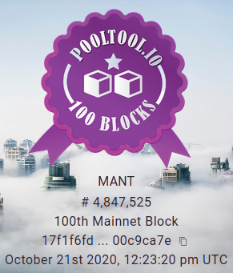
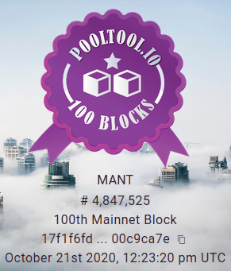
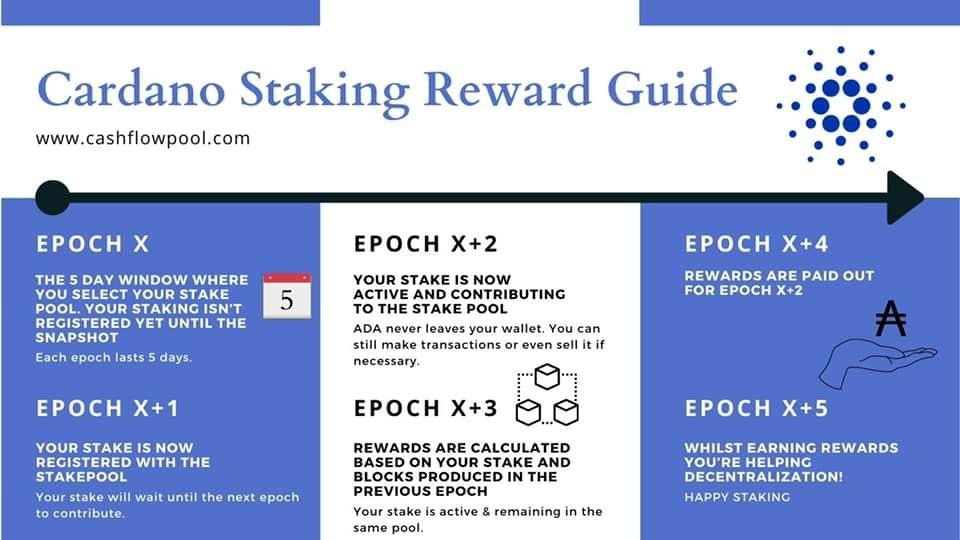

MANTIS 1PERCENT - two great pools!
Delegation Reward Timeline
Epoch 229 (Nov 11 - Nov 16): Delegate today to the MANTIS pool.Epoch 230 (Nov 16 - Nov 21): Your stake is now registered with MANTIS. Waiting for next Epoch to contribute to rewards. Until then, you continue to earn rewards from your old pool.
Epoch 231 (Nov 21 - Nov 26): Your stake is now active and contributing to MANTIS rewards.
Epoch 232 (Nov 26 - Nov 30): Rewards are calculated based on your stake and the blocks produced by MANTIS in Epoch 231.
Epoch 233 (Nov 30 - Dec 04): Rewards for Epoch 231 are paid out automatically by the Cardano protocol.
How much Rewards did I earn?
- It can take anywhere from 15 to 20 days for your rewards to appear when you first delegate to a pool or re-delegate your existing stake to a different pool. click here to read the FAQ about Reward/Delegation.
-
To view your past rewards and an estimate of your current rewards,
click here to view the MANTIS delegator list.
Find your wallet address in the delegator list and then click on the blue/white arrow in the last column on the right.
- For an overview of MANTIS performance, epoch stats and rewards, click here for cardanoscan overview.
Incredibly Low 1% delegation fee
- Experienced - Operated two successful pools on the HTN test net.
- 100% dedicated to the decentralization of the Cardano network.
- Long-term operating plan. Invested in node infrastructure and upgrades.
- Cloud based Linux servers located in military grade secure data centers (United States and Germany).
- 24/7 operation with 99.9% uptime performance (v.1.20.1).
- Professionally run with over 30 years of IT experience.
- Rock solid security and firewall and DDos protection.
- You maintain custody and control of your ADA at all times.
- Stake pool operators never have access to your delegated ADA.
- Delegate and relax. Your staking rewards auto-compound.
 

Staking (delegating) ada
Epoch
A period of 5 days.
Pledge
The amount of ada the owners of the stakepool have to delegate to their own pool. The pledge setting is set during stakepool registration by the owners and the owners have to honor that pledge amount by delegating that amount to their own pool. If they do not honor the pledge then pool rewards decrease. The influence factor of the pledge is currently set to 0.3 so it is currently rather small. This influence factor will increase in value once full decentraliztion occurs.
Active Stake versus Live Stake
Active Stake means stake based upon which the rewards for the pool will be calculated. Live Stake means stake which is currently delegated to the pool.
Example: Let's say that we are now in epoch 208. Both active stake and live stake of the pool is 0. Now delegators start delegating to the pool (in epoch 208). In total 100,000 ada is staked to the pool at the end of epoch 208. Live stake is now 100,000 for the pool. This stake becomes active stake in epoch 210. For stake to become active stake it takes current epoch (208) + 1 full epoch (209), so for this example active stake in epoch 210 is 100,000 ada. During epoch 209 delegators might decide to join or leave the pool. Let's say that 2 delegators decide to delegate to the pool each with 20,000 ada, and one delegator delegating 30,000 ada decided to move to a different pool, then the live stake will be 100,000 + 20,000 + 20,000 - 30,000 = 110,000 ada. If this live stake is the value at the end of epoch 209, then this amount will become the active stake in epoch 212 (current epoch + 1 full epoch). In epoch 211, the active stake remains 100,000 ada, as in epoch 210.
Stakepool block production and schedule
During epoch transition (going from one epoch to the next) a block schedule is determined and the blocks are assigned to the stake pools. The number of blocks assigned to stakepools is based upon their active stake, however, there is no guarantee one or more blocks are assigned. When the blocks are going to be produced nobody knows and is completely random. Don't worry if the pool hasn't produced any blocks during the first couple of days because it might be that the blocks are scheduled near the end of the epoch.
Pool cost (cost per epoch) and margin
The pool cost of a pool are the costs the pool calculates and should equal the cost the operators (owners) have to make for running the pool. Think about hardware investments, internet connection costs, labor, etc. The margin of the pool is the profit the operators (owners) grant themselves. Example: Let's say the total rewards for the pool in a particular epoch are 10,000 ada. The pool cost are set to 340 and the margin is set to 2%. First the pool costs are taken off the total rewards: 10,000 - 340 = 9,660 ada. Then from that remainder the margin is taken off: 9,660 - (2% of 9,660) = 9,466.80 ada remaining. This remaining 9,466.80 ada is divided across the delegators relatively to their percentage of delegated ada.
Reward calculation and pay outs
Rewards are being calculated in the epoch before the epoch in which the rewards are being paid out. Example: In epoch 209 you delegated your ada to a stakepool. This delegated stake became active stake in epoch 211. The stakepool you delegated your ada to, did produce blocks, so will receive rewards, and with that, you will too. During epoch 212 the rewards will be calculated. In the beginning of epoch 213 the rewards will be paid out.
Here is a great graphic from our friends at CashFlow Pool that summarizes the delegation process
